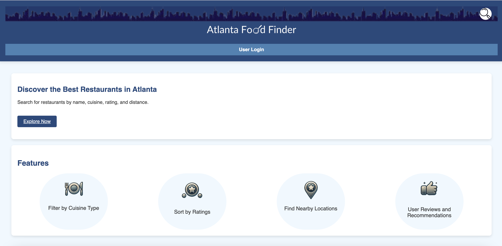
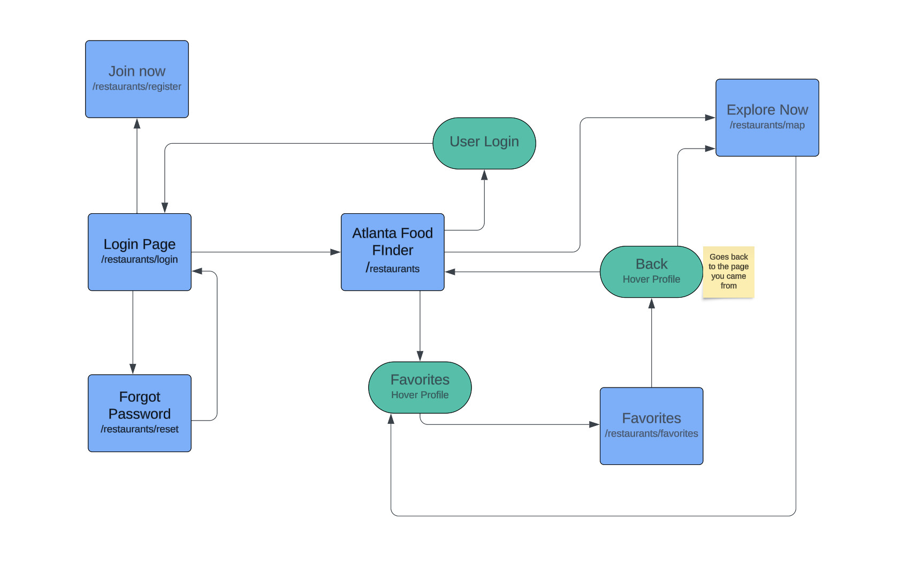
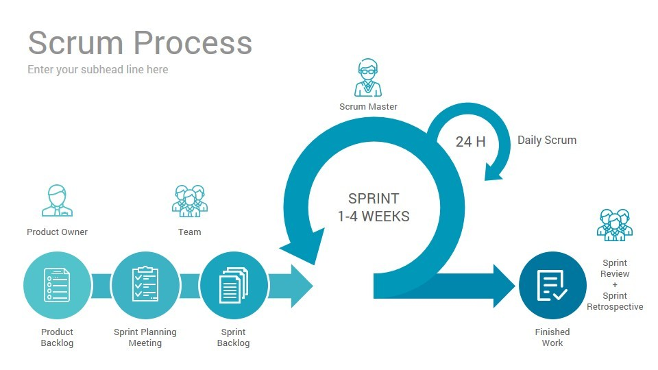

The goal of this project is to design and develop a web application using Django and Google Maps that helps citizens in Atlanta find places and restaurants to eat.
Atlanta Food Finder is a web application that allows users to search for and discover restaurants nearby in Atlanta. Users can view restaurant locations on a map, read reviews, and get addresses. The application will feature a user-friendly interface and provide useful information about each restaurant, such as address, cuisine type, ratings, and contact information.
Our team consists of 5 Georgia Tech sophomores. Each member is responsible for different features of the website and has contributed uniquely.
Stuthi is responsible for the front-end development, testing of the project, and the team website. Individual contributions include the search functionality and restaurant details.
Jordyn created the design and user experience for the platform, and also contributed to front-end development. Individual contributions include the login functionality.
Maya is responsible for backend development and project deployment, she is also the scrum master. Individual contributions include the favorites page.
Raymond is responsible for backend development and the overall vision of the product. Individual contributions include the geolocation and search functionality.
Jesseca handles both front-end and back-end development as a full-stack developer.
The Atlanta Food Finder is designed to help users find food in the city based on their location. The CSS is designed to be cohesive with the website and the layout is made so that users can easily access their account and view a professional interface. More about the specific pages, user stories, is detailed below.
Our team followed the Scrum methodology for project management. We held regular sprints and meetings to ensure that our project stayed on track. We relied on a daily standup to know what our team members were working on and keep everyone accountable. We had different phases of our website development including planning (creating figmas, user story mockups), implementation, testing, and deployment.
 Watch the demo of our web app by clicking the link below:
View Demo Video